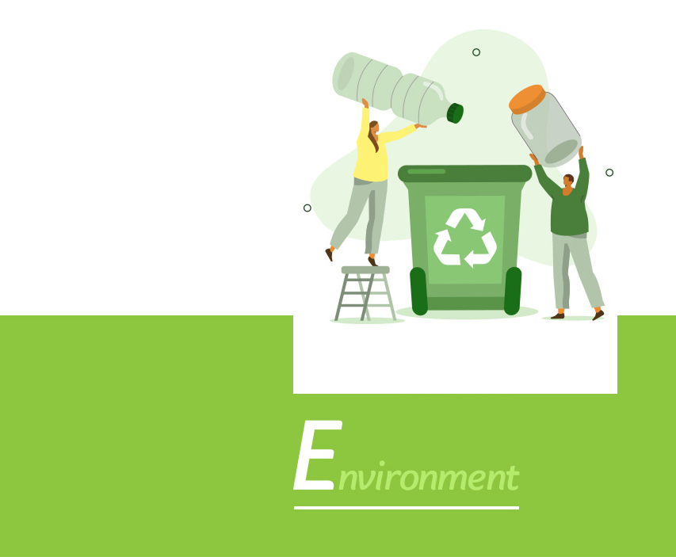
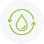
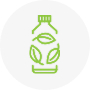
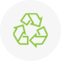
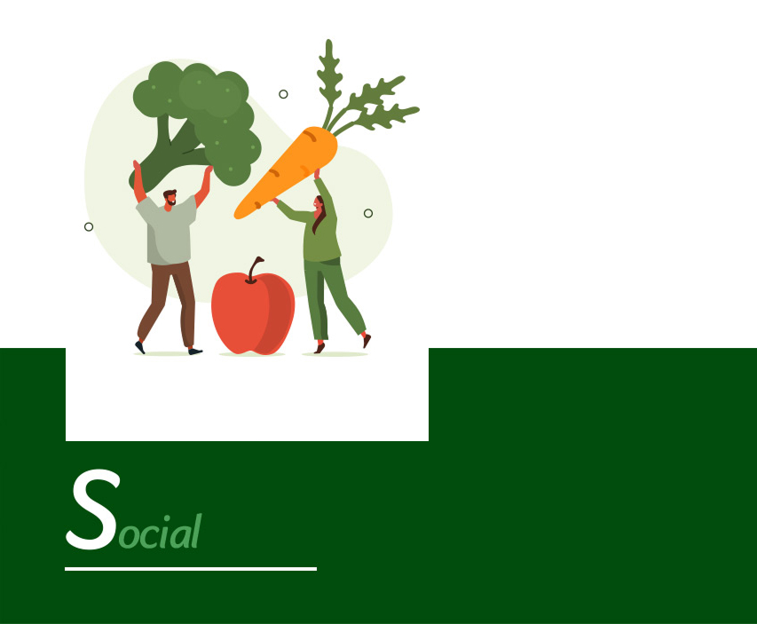
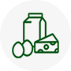
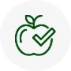
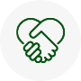
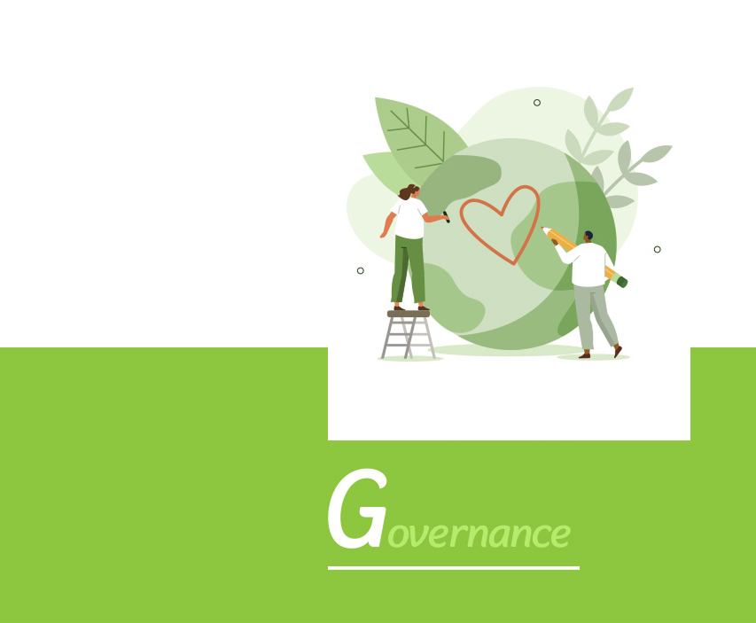
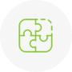

풀무원은 이웃사랑, 생명존중의 정신에서 시작한 “내 가족의 건강과 행복을 위한 바른먹거리”를 “내 몸에도 지구환경에도 좋은
지속가능 식품”으로 진화시켰습니다. 풀무원의 지속가능 식품은 동물성 원료 사용을 줄이고 식물성 원료 사용을 지향하는
‘식물성 지향 식품(Plant-Forward Foods)’, 지속가능 속성의 동물성 원료를 강조하는 ‘동물복지 식품(Animal Welfare Foods)’으로 구성됩니다.
풀무원 ESG 경영 주요 성과
창립부터 이어온 풀무원 정신과 이를 계승한 미션, 사회책임경영을 통해
ESG 성과를 창출하여 대외적으로 높은 인정을 받고 있습니다.

재생에너지 확대국내 제조사업장과 물류센터의 전체 에너지 사용량 중 재생에너지 사용 비중
3.8%(53TJ)

용수 · 폐기물 감축2021년 대비 2022년에 사용한 용수 감축량 15만5천톤 2022년 폐기물 감축량 1,297톤

플라스틱 감축2021년 대비 2022년 플라스틱 사용량 154톤 감축

지속가능한 포장재에 대한 개발'에코케어링(Eco-Caring)' 핵심전략 수립 바이오 플라스틱(샐러드), 재활용 PP 포장(두부, 나또) 단일소재 PE 포장


식품 안전 강화
협력기업과 '식품 디지털 클러스터' 구축, 8개 자사 공장, 6개 협력기업
'스마트해썹(HACCP)' 등록

맞춤형 건강 관리'개인맞춤영양' 모바일 어플(APP)을 통해 건강상태 문진 및 개인별 맞춤
건강기능식품 제안

인권경영국가인권위원회 주관 '민간기업 인권경영 시범사업' 참여, 인권경영 실사
프로젝트 진행
지속가능한 사회적 가치 창출 (CSV, Create Social Value)CSV 가치를 반영한 청년 자립 지원 및 임직원과 함께하는 생물다양성 탐사
활동 진행

주주가치 증진
주주총회 및 이사회 내 위원회의 의사결정 권한 일부 확대
책임 경영 강화경영진의 회사 경영에 대한 책임에 비재무 영역 포함

이사회 독립성사외이사의 독립성 규제 재정비 및 공시
이사회 역량 강화역량을 갖춘 사외이사 후보를 추천하도록 이사회 내 위원회 규정 정비
중소벤처기업부 디지털 클러스터(Cluster) 지원사업 참여
풀무원은 디지털 역량에 기반한 제조 경쟁력을 강화하고자 중소벤처기업부가 추진하는 식품 디지털 클러스터(Cluster)
사업에 참여 중입니다. 현재 기업 간 연계 및 공통적으로 활용가능한 스마트 시스템 구축 작업을 진행하고 있습니다.
이를 통해 식품산업 내 디지털 선도 기업으로 입지를 다지고, 나아가 디지털 제조혁신 생태계 조성에 기여할 예정입니다.